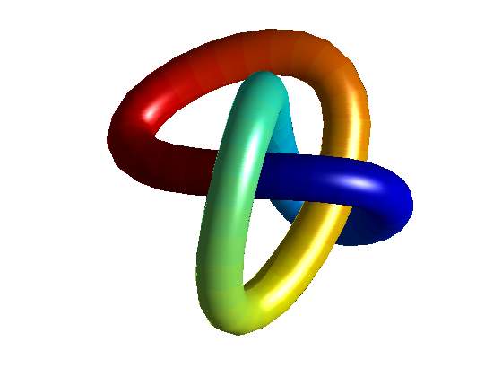

Compute the parametric representation of tube-like surfaces and display the tube with SURF.
Original code by Rouben Rostamian, March 1991. Modified from Titan MATLAB to MATLAB V4.0 by Cleve Moler, September 1991.
% Number of grid points in each (circular) section of the tube. m = 20; % Number of sections along the tube. n = 60; % Radius of the tube. R = 0.75; % Symmetry index. Try q=floor(n/3) (symmetric) or q=floor(n/4) q = floor(n/3); % Do not change this! t = (0:n)/n;
% The generating function f0 must be 1-periodic. % f1 and f2 are the first and second derivatives of f0. a = 2; b = 3; c = 1.5; q1=2; q2=4; f0 = sin(q1*pi*t) + a*sin(q2*pi*t) - ... b*cos(4*pi*t)/2 + c*sin(6*pi*t); f1 = (q1*pi)*cos(q1*pi*t) + a*(q2*pi)*cos(q2*pi*t) + ... b*(4*pi)*sin(4*pi*t)/2 + c*(6*pi)*cos(6*pi*t); f2 = -(q1*pi)^2*sin(q1*pi*t) - a*(q2*pi)^2*sin(q2*pi*t) + ... b*(4*pi)^2*cos(4*pi*t)/2 - c*(6*pi)^2*sin(6*pi*t);
% Extend f periodically to 2 period-intervals: f0 = [ f0(1:n) f0(1:n) ]; f1 = [ f1(1:n) f1(1:n) ]; f2 = [ f2(1:n) f2(1:n) ]; % [x10;x20;x30] is the parametric representation of % the center-line of the tube: x10 = f0(1:n+1); x20 = f0(q+1:q+n+1); x30 = f0(2*q+1:2*q+n+1); % [x11;x21;x31] is velocity (same as tangent) vector: x11 = f1(1:n+1); x21 = f1(q+1:q+n+1); x31 = f1(2*q+1:2*q+n+1); % [x12;x22;x32] is acceleration vector: x12 = f2(1:n+1); x22 = f2(q+1:q+n+1); x32 = f2(2*q+1:2*q+n+1); speed = sqrt(x11.^2 + x21.^2 + x31.^2); % This is the dot-product of the velocity and acceleration vectors: velacc = x11.*x12 + x21.*x22 + x31.*x32; % Here is the normal vector: nrml1 = speed.^2 .* x12 - velacc.*x11; nrml2 = speed.^2 .* x22 - velacc.*x21; nrml3 = speed.^2 .* x32 - velacc.*x31; normallength = sqrt(nrml1.^2 + nrml2.^2 + nrml3.^2); % And here is the normalized normal vector: unitnormal1 = nrml1 ./ normallength; unitnormal2 = nrml2 ./ normallength; unitnormal3 = nrml3 ./ normallength; % And the binormal vector ( B = T x N ) binormal1 = (x21.*unitnormal3 - x31.*unitnormal2) ./ speed; binormal2 = (x31.*unitnormal1 - x11.*unitnormal3) ./ speed; binormal3 = (x11.*unitnormal2 - x21.*unitnormal1) ./ speed; % s is the coordinate along the circular cross-sections of the tube: s = (0:m)'; s = (2*pi/m)*s; % Each of x1, x2, x3 is an (m+1)x(n+1) matrix. % Rows represent coordinates along the tube. Columns represent coordinates % in each (circular) cross-section of the tube. xa1 = ones(m+1,1)*x10; xb1 = (cos(s)*unitnormal1 + sin(s)*binormal1); xa2 = ones(m+1,1)*x20; xb2 = (cos(s)*unitnormal2 + sin(s)*binormal2); xa3 = ones(m+1,1)*x30; xb3 = (cos(s)*unitnormal3 + sin(s)*binormal3); color = ones(m+1,1)*((0:n)*2/n-1); x1 = xa1 + R*xb1; x2 = xa2 + R*xb2; x3 = xa3 + R*xb3;
surf(x1,x2,x3,color); shading interp; light lighting phong view(2) axis equal off